CS184/284A Spring 2025 Homework 1 Write-Up
Link to webpage: cal-cs184-student.github.io/hw-webpages-asdfghjkl
Link to GitHub repository: cal-cs184-student/hw1-rasterizer-asdfghjkl

Overview
Give a high-level overview of what you implemented in this homework. Think about what you've built as a whole. Share your thoughts on what interesting things you've learned from completing the homework.Task 1: Drawing Single-Color Triangles
How We Rasterise Triangles:
Our triangle rasterization algorithm works as follows:
- We compute the bounding box by calculating the min and max x & y coordinates of the triangle's 3 vertices. This defines a rectangular space that can fully contain the triangle
- We iterate through each pixel (x, y) within this bounding box to test whether it lies inside the triangle
- For each pixel, We test the point at (x+0.5, y+0.5) which is the center of the pixel rather than the corner
- We used the get_orientation helper function to compute the cross product of the point with respect to each edge. This gives us 3 orientation values (w0, w1, w2) that determine which side of each edge the sample point lies on.
- A point is inside the traingle if all 3 orientation values have the same sign as the cross product of the 3 vertices. So we have to check both cases: all positive (counter-clockwise) or all negative (clockwise). Points on the boundary (any w value = 0) is treated as inside the boundary.
- If the point passes the test for inside, we color the pixel.
Bounding Box Efficiency:
Our algorithm is no worse than checking each sample within the bounding box because we are doing just that. Our outer loops iterate from minX to maxX and minY to maxY, which are computed directly from the triangle vertices using floor() and ceil(). This means we only check the pixels within the smallest axis-aligned rectangle containing the triangle, and we don't perform checks outside this bounding box, making the algorithm exactly as efficient as a bounding-box approach. The time complexity is O(width x height of bounding box), which is optimal for this rasterization method.
Task 2: Antialiasing by Supersampling
Why is Supersampling Useful:
It is useful because it reduces aliasing such as jagged edges on the triangle boundaries. By sampling multiple times per pixel and averaging the results, we get smoother edges that can better approximate the true geometry.
How We Implemented Supersampling:
Our supersampling algorithm works as follows:
- We treat the sample buffer as a higher resolution version of the framebuffer.
- For a sample rate of N, the sample buffer is N times larger than the framebuffer.
- In rasterize_triangle, we scale up the triangle coordinates by sqrt(sample_rate) and rasterize into this higher resolution sample buffer, sampling at the center of each supersample.
- In fill_pixel, instead of writing to a single location, we fill all sqrt(sample_rate) x sqrt(sample_rate) supersamples corresponding to that pixel with the same colour, ensuring points and lines still render correctly without supersampling.
- Then, in resolve_to_framebuffer, we downsample by averaging all supersamples corresponding to each output pixel and writing the result to the frame buffer.
As we can see below, as sampling rate goes up, the aliasing artefacts goes down, and the disconnected pixels on the sharp edge becomes connected and smoother.
|
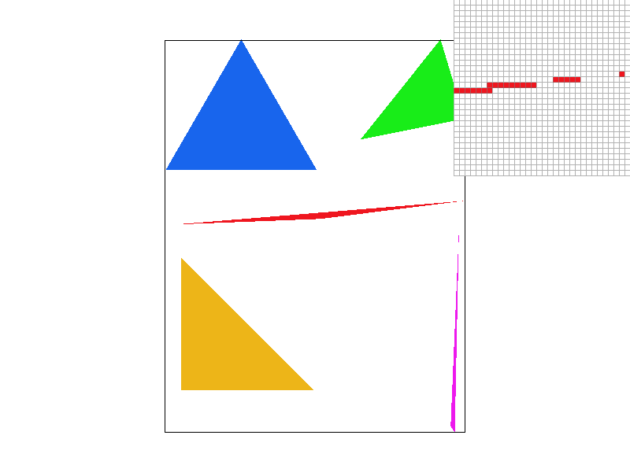 |
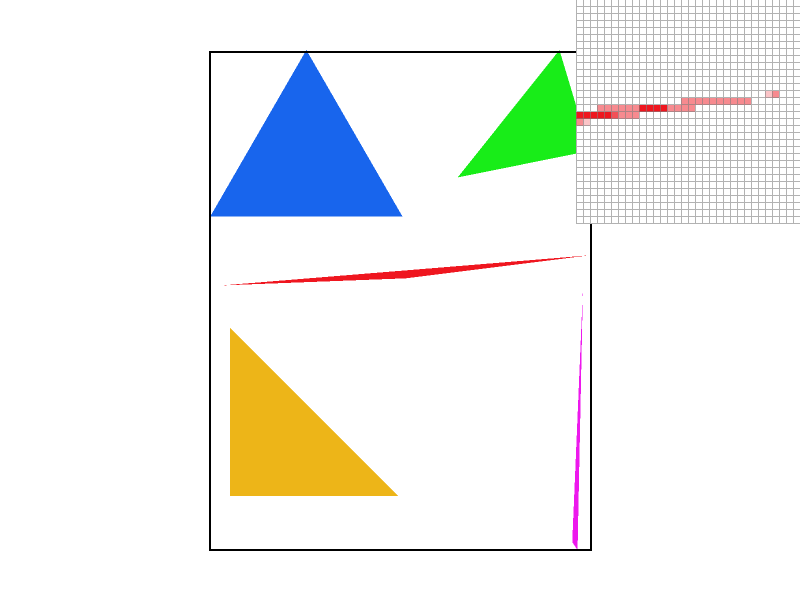 |
|
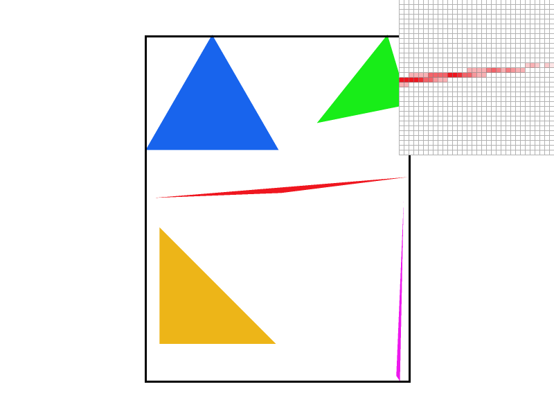 |
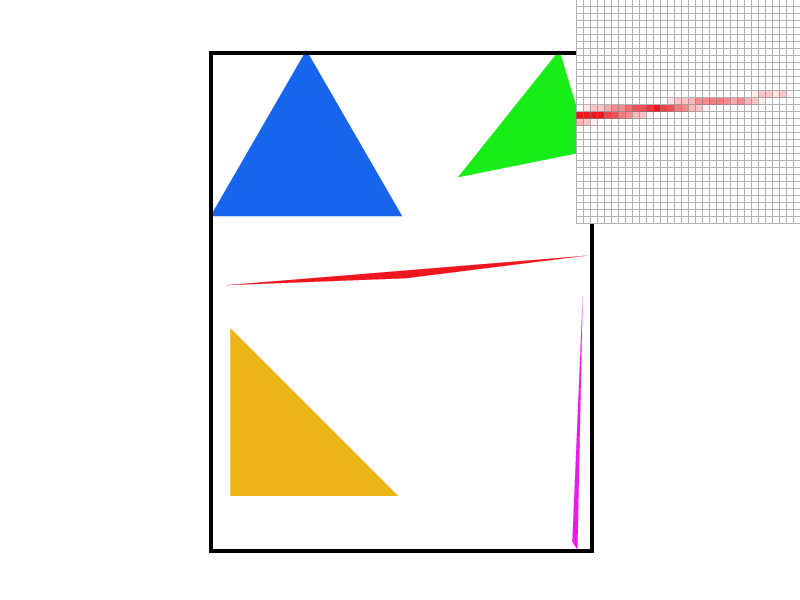 |
Task 3: Transforms
How Did We Implement Transform:
translate(dx, dy): this is a translation matrix with 1's on the diagonal and dx, dy in the third column, hence shifting points by (dx, dy)
scale(sx, sy): this is a scaling matrix that multiplies x-coordinates by sx and y-coordinates by sy, with sx, sy and 1 on the diagonal.
roatate(deg): this is a rotation matrix that rotates points counterclockwise by deg degrees, with cos(θ) and -sin(θ) in the first row and sin(θ) and cos(θ) in the second row.
What Did We Do to Cubeman:
We modified cubeman to be happier! It is now a blue cubeman dancing!
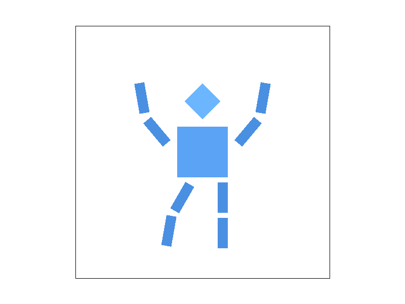
Task 4: Barycentric coordinates
What is Baycentric Coordinates:
Baycentric coordinates are a way of expressing any point within a triangle as a weighted average of the 3 vertices of the triangle.
For a triangle with vertices V0, V1, V2, any point P inside the triangle can be represented as:
P = α₀·V0 + α₁·V1 + α₂·V2
where α₀ + α₁ + α₂ = 1 and each α value is between 0 and 1.
These weights (α₀, α₁, α₂) tell us how much influence each vertex has on point P. The closer P is to a vertex, the larger that vertex's weight. For example, if P is exactly at V0, then α₀ = 1 and α₁ = α₂ = 0.
We calculate these weights using the cross product to find signed areas. For a point P inside the triangle:
- α₀ = Area(P, V1, V2) / Area(V0, V1, V2)
- α₁ = Area(V0, P, V2) / Area(V0, V1, V2)
- α₂ = Area(V0, V1, P) / Area(V0, V1, V2)
This is very useful for interpolation. If each vertex has a color, we can smoothly blend the color values across the triangle by using the barycentric weights:
Color(P) = α₀·Color(V0) + α₁·Color(V1) + α₂·Color(V2)
In our implementation, we reused the triangle rasterization code from Task 2, but instead of filling each pixel with a single color, we calculated the barycentric coordinates (α₀, α₁, α₂) for each sample point and use them to interpolate between the three vertex colors.
|
|
|
Task 5: "Pixel sampling" for texture mapping
What is Pixel Sampling:
Pixel sampling is the process of determining what color to assign to a pixel when rendering a texture-mapped surface. When we rasterize a textured triangle, each pixel on the screen corresponds to some location in the texture space given by UV coordinates. Pixel sampling is how we look up the corresponding color from the texture image at those UV coordinates.
How We Implemented Pixel Sampling:
We implemented pixel sampling by computing barycentric coordinates for each sample point, just like in task 4. But instead of interpolating vertex colors, we interpolated the UV texture coordinates from the 3 vertices. This gives texture coordinate (u, v) for each sample point. The coordinates are then passed to the texture sampling functions to get the final color.
Two Pixel Sampling Methods:
Nearest Neighbor Sampling: This method rounds off the UV coordinates to the nearest integer texel coordinate and return that texel's color. So if UV coordinates map to (5.7, 3.2) in texture space, we round it to (6, 3) and return that texel.
While fast, this method can produce blocky and pixelated results, especially when the texture is magnified.
Bilinear Sampling: This method takes the four nearest texels surrounding the UV coordinate and performs bilinear interpolation. So for UV coordinate (5.7, 3.2), it will sample texels at (5, 3), (6, 3), (5, 4), (6, 4), then blend them based on fractional weights to return the final color.
This method produces smoother results but requires 4 texture lookups and hence is computationally expensive.
|
|
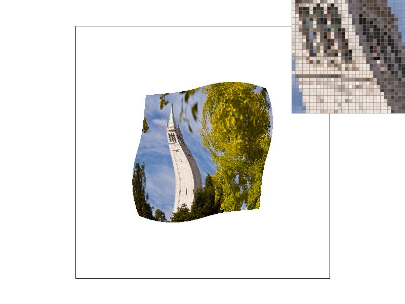 |
|
|
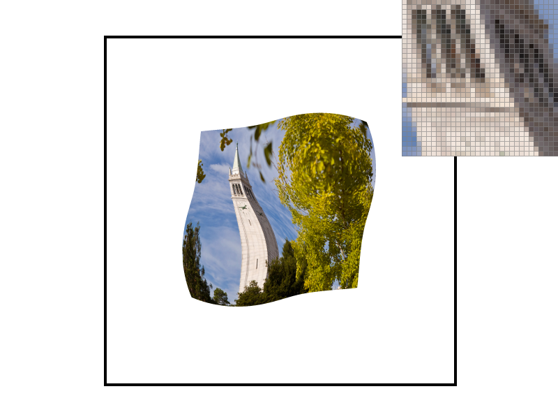 |
|
|
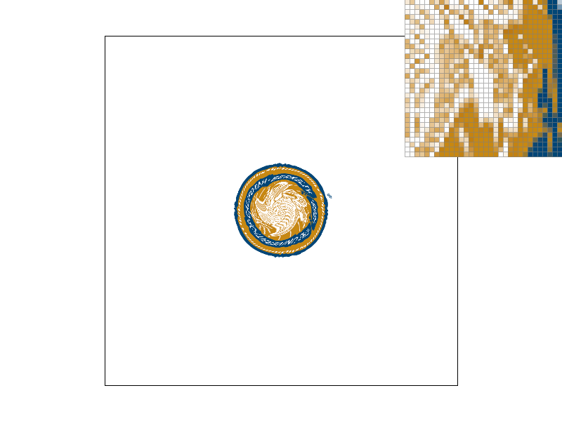 |
|
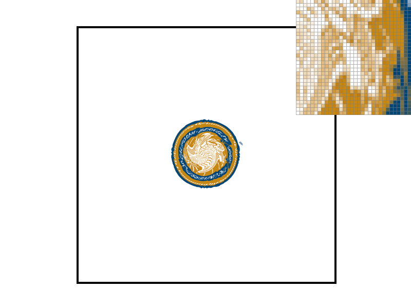 |
|
As we can see from the images, bilinear sampling method produces smoother textures as compared to the nearest neighbour method, especially at sample rate 1.
Relative Differences:
The difference is most noticeable when:
- Magnified texture: When fewer texels cover more screen pixels, nearest sampling creates visible pixel blocks while bilinear sampling smooths out gradients between texels values.
- High-frequency details: Nearest neighbours causes visible aliasing and pixelation when the texture contains fine details or sharp edges, while bilinear sampling smooths these transitions out.
- At low sample rates: With only 1 sample per pixel, there is no supersampling to mask the aliasing artefact from nearest neighbour, hence bilinear sampling outperforms.
- Textures are viewed at angles: When UV coordinates don't align with the texel grid, bilinear sampling provides much better results through interpolating than nearest neighbour which snaps to discrete positions.
The fundamental difference is that nearest neighbor creates discontinuities by jumping from one texel color to another, while bilinear sampling maintains continuity by smoothly blending between neighboring texel values.
Task 6: "Level Sampling" with mipmaps for texture mapping
What is Level Sampling:
Level sampling (mipmapping) is a techniqu to select the appropriate resolution of a texture based on how much screen space it occupies. Mipmap is a precomputed sequence of textures, each half the resolution of the previous one. When a texture covers fewer pixels on screen, we use a lower level mipmap to avoid aliasing artefacts that occur when many texels map to 1 pixel.
How Did We Implement Level Sampling:
We first calculated the mipmap level needed for each pixel in get_level(). This function computes how much the UV coordinates change between adjacent pixels by taking the difference between sp.p_dx_uv - sp.p_uv and sp.p_dy_uv - sp.p_uv. We scale these differences by the texture width and height, then compute the length of each gradient vector. The mipmap level is deteremined by taking log2 of the maximum gradient length, which tells us how many texels correspond to 1 pixel.
In our sample() function, we implemented three level sampling methods:
- L_ZERO: Always sample from level 0 (full resolution), which is done in Task 5
- L_NEAREST: Calculate the mipmap level and round to the nearest integer, then sample from that discrete level
- L_LINEAR: Calculate the continuous mipmap level, then sample from both adjacent integer levels and linearly interpolate between them based on the fractional part
|
|
|
|
|
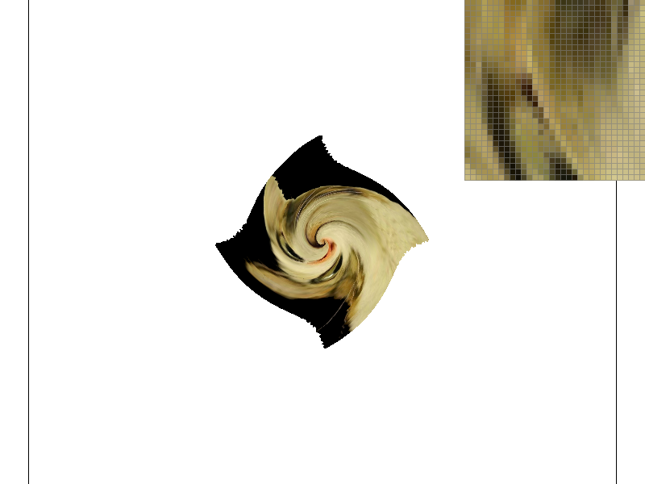 |
Tradeoffs:
Pixel Sampling (P_NEAREST vs P_LINEAR):
- Speed: Nearest is faster (1 texture lookup) vs bilinear (4 texture lookups)
- Memory: Both use the same memory
- Antialiasing: Bilinear provides better antialiasing for texture magnification by smoothing between texels
Level Sampling (L_ZERO vs L_NEAREST vs L_LINEAR):
- Speed: L_ZERO is fastest (no level calculation), L_NEAREST adds level computation, L_LINEAR is slowest (samples two levels and interpolates)
- Memory: L_ZERO uses only full resolution, while L_NEAREST and L_LINEAR require storing the entire mipmap pyramid (adds ~33% memory to store all mipmap levels)
- Antialiasing: L_ZERO suffers from aliasing when textures are minified, L_NEAREST improves this significantly, L_LINEAR (trilinear when combined with P_LINEAR) provides the smoothest results by removing level transition artifacts
Supersampling (1 vs 16 samples per pixel):
- Speed: Slow. 16x supersampling is 16 times slower than 1 sample per pixel (O(N) time, where N is sample rate)
- Memory: Requires N times more memory for sample buffer
- Antialiasing: Effective at reducing geometric edge aliasing and provides some texture antialiasing, but less efficient than mipmapping for texture minification
(Optional) Task 7: Extra Credit - Draw Something Creative!
We made a python script (src/spiral.py) that procedually generates the svg file. the script works by creating 200 triangles arranged in a logarithmic spiral, and each triangle's position is calculated using polar coordinates with increasing radius. The color cycles through the colors of a rainbow.
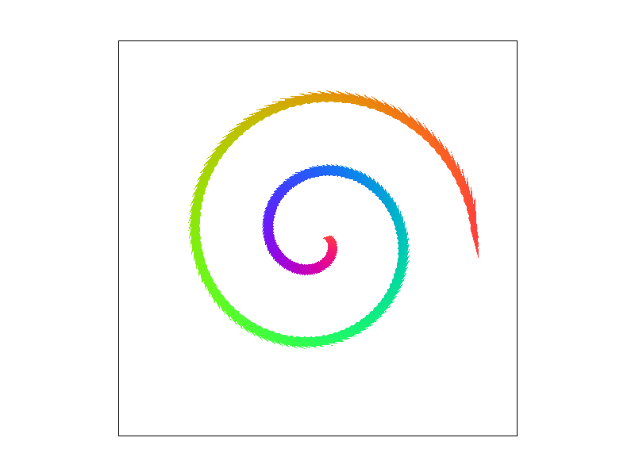